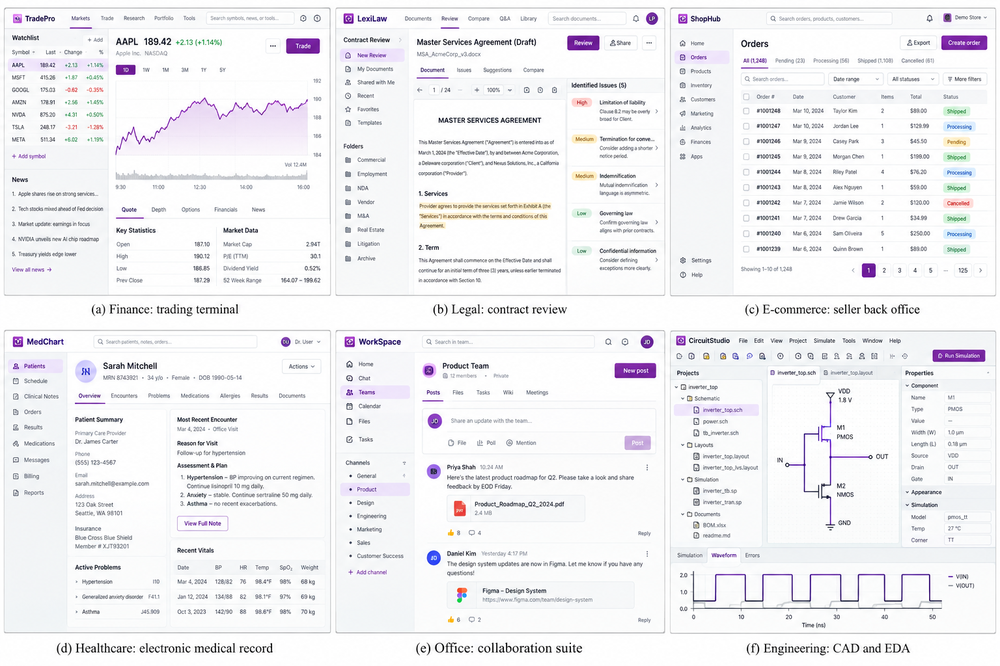

一、研究背景和选题意义
通用数字智能体可应用于软件开发、系统运维、内容创作及金融、电商等行业业务流程，
是基础模型由对话助手走向数字生产力的关键形态。
软件开发与调试（Godot 游戏，5×）
系统运维与故障排查（RabbitMQ，5×）
视觉设计与内容创作（Inkscape，5×）

行业业务流程（示意图）
产业趋势：三种能力正在整合于同一智能体
• Claude Cowork、Codex 后台计算机操作、Qwen3.8-Max 等前沿系统均将命令行、代码与图形界面操作纳入统一智能体
• 大量存量软件（设计工具、行业系统、桌面应用）缺少可编程接口，必须依赖视觉模态完成操作
• 能否高效、可靠地完成混合界面操作，已成为前沿基础模型能力评测与后训练的核心议题